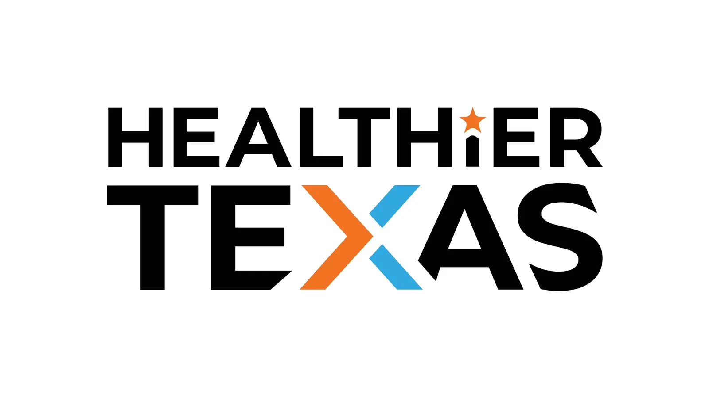

How I Designed Campaigns That Grew a Wellness App to 40K Users and Took a Summit to 10K Online
Campaign Design for Public Health & Wellness
Healthier Texas (formerly It's Time Texas) is a statewide public health organization focused on wellness education, digital outreach and community engagement. I worked on social campaigns, video and visual storytelling across their web and email channels during a big push into digital.
- Users of the wellness app, up from 20K the year before
- 40K
- People reached online when the Summit went virtual
- 10K
- Digital-first campaigns launched within weeks of the 2020 shutdown
- 2
Engaging Texans in Health and Wellness Amidst a Pandemic
When the COVID-19 shutdown hit, Healthier Texas (formerly It's Time Texas) had to rethink how it showed up for the public, and fast. Within weeks we launched two digital-first campaigns.
I brought both to life visually. For Texans Thrive, I helped shape and design the website, turning stories of community resilience into a warm, clear digital experience. For Texas Sweats for Pets, I created the full set of campaign visuals, from social graphics and email headers to paid ad creative, all designed to get people moving and drive donations.
“We needed something that felt joyful and human, even at a time when things felt heavy.”
Together, these campaigns set the tone for how Healthier Texas would engage people through the pandemic.
Bringing a Statewide Wellness Conference to Life Through Web and Social
The Healthier Texas Summit was one of the state's largest public health events, and in 2020 it had to go fully virtual. That raised a design question: how do you make a digital event still feel connected and real?
I led visual design across the Summit, from branded banners and speaker promos to a social template system that flexed with every announcement. I used vibrant color and people-first imagery to bring energy through a screen, because I didn't want to lose the human element just because we weren't in the same room.
The visual system carried through pre-event promotion, livestream assets and post-event recaps, so the Summit looked consistent everywhere it appeared.
Branding Work for Healthy Texas Week + General Visual Support
Before the pandemic changed timelines, I designed the logo and early visuals for Healthy Texas Week, a campaign encouraging healthy eating and movement. The event was eventually cancelled, but the identity laid groundwork for later brand work.
I also created evergreen assets for Healthier Texas's ongoing digital presence: banners, content templates and social graphics that helped the team stay consistent and respond quickly.
Visual Design for Statewide Health Initiatives
These two programs brought public health to life at scale, one through friendly competition and the other through practical training. For the Community Challenge, a wellness app used by tens of thousands across Texas, I created social, web and app graphics that encouraged people to take part and stayed accessible. For the Regional Workshop Series, I designed digital materials and promotional content for community leaders and educators.
End-to-End Video Production Featuring Public Leaders and Community Partners
From interviews with the Mayor of Austin to spotlights on nonprofit partners, I handled video production end to end: scripting, filming, editing and motion. These pieces gave audiences a direct connection to the people behind the programs.
Photography to Capture Real Moments and Mission Impact
I also shot photography, mostly at the Healthier Texas Summit and community activations, for social posts, blog content and newsletters. Whether it was a speaker on stage or a team in motion, I aimed to show the real people moving health forward.
Hiring for a content, web, or marketing operations role? I would like to talk.
csworkportfolio@gmail.comLinkedIn